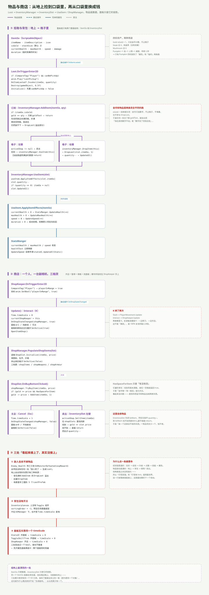

一句话说清
物品模块的核心思想只有一句：ItemSo 是数据，InventorySlot 只是它的投影。
同一个 ItemSo 资产能躺在背包格里、挂在商店格上、也能躺在地上——三处都只是持有同一个 SO 引用，谁也不复制数据。所以改一次图标，三处一起变。
商店链则完全独立：它不改数据，只做「加减金币 + 调 AddItem」。
全链一张图

数据结构：一个 SO 撑起整个模块
[CreateAssetMenu(fileName = "New Item")]
public class ItemSo : ScriptableObject
{
public string itemName;
[TextArea] public string itemDescription;
public Sprite icon;
public bool isGold;
public int stackSize = 3;
[Header("Stats")]
public int currentHealth, maxHealth, speed, damage;
[Header("For Temporary Items")]
public float duration;
}工程里只有 4 份资产：
| 资产 | 属性 | 实际效果 |
|---|---|---|
Gold | isGold = 1 | 只加金币计数，不占格子 |
Steak | 全 0 | 纯道具，用了什么都不会发生 |
Mushroom | 全 0 | 同上 |
Pumpkin | +1 血 / +1 上限 / +1 速度 / 5 秒 | 唯一一个真能改属性的 |
拾取：触发器 + 静态事件
private void OnTriggerEnter2D(Collider2D collision)
{
if (collision.CompareTag("Player") && canBePickUp)
{
anim.Play("LootPickup");
OnItemLooted?.Invoke(itemSo, quantity);
Destroy(gameObject, 0.5f);
}
}注意这里用了 ?.Invoke——和敌人死亡那个裸调用正好相反。而且 Initialize() 会把 canBePickUp 先置为 false，防止刚扔出去的同帧被自己再捡回来。
事件被 InventoryManager 接住：
private void OnEnable() { Loot.OnItemLooted += AddItem; }
private void OnDisable() { Loot.OnItemLooted -= AddItem; }AddItem：四道分流
public void AddItem(ItemSo itemSo, int quantity)
{
if (itemSo.isGold) { gold += quantity; goldText.text = gold.ToString(); return; }
foreach (var slot in itemSlots) // ① 找同类未满格，补满
if (slot.itemSo == itemSo && slot.quantity < itemSo.stackSize) { ... }
foreach (var slot in itemSlots) // ② 找空格，整批塞进去
if (slot.itemSo == null)
{
int amountToAdd = Mathf.Min(itemSo.stackSize, quantity);
slot.itemSo = itemSo;
slot.quantity = quantity; // ← 不是 amountToAdd
slot.UpdateUI();
return;
}
if (quantity > 0) DropLoot(itemSo, quantity); // ③ 全满，溢出回地上
}第 ② 步有个实现 bug：算出了 amountToAdd，赋值时却用了 quantity。结果是一个空格能塞下超过 stackSize 的数量（stackSize = 3 时塞进 10 个）。
使用：格子自己决定「这是用还是卖」
public void OnPointerClick(PointerEventData eventData)
{
if (quantity > 0 && eventData.button == PointerEventData.InputButton.Left)
{
if (activeShop != null) { activeShop.SellItem(itemSo); quantity--; UpdateUI(); }
else { inventoryManager.UseItem(this); }
}
else if (eventData.button == PointerEventData.InputButton.Right)
inventoryManager.DropItem(this);
}activeShop 从哪来？从事件来：
private void OnEnable() { ShopKeeper.OnShopStateChanged += HandleShopStateChanged; }
private void HandleShopStateChanged(ShopManager shopManager, bool isOpen)
{
activeShop = isOpen ? shopManager : null;
}于是同一个左键，在店外是「吃」，在店内是「卖」。背包格自己不知道有没有开店，它只知道 activeShop 是不是空的。
UseItem.ApplyItemEffects() 再往下一层：
if (itemSo.currentHealth > 0) StatsManger.Instance.UpdateHealth(itemSo.currentHealth);
if (itemSo.maxHealth > 0) StatsManger.Instance.UpdateMaxHealth(itemSo.maxHealth);
if (itemSo.speed > 0) StatsManger.Instance.UpdateSpeed(itemSo.speed);
if (itemSo.duration > 0) StartCoroutine(EffectTimer(itemSo, itemSo.duration));EffectTimer 到期后把三项反向扣回去——所以「临时增益」的实现方式是「加一次、减一次」，中途没有任何状态记录。如果到期前又吃了第二个同类道具，两个协程会各自扣一次，属性就回不去了。
商店：五步开店
| 步骤 | 谁 | 做了什么 |
|---|---|---|
| ① 进圈 | ShopKeeper.OnTriggerEnter2D | playerInRange = true，同时播动画 |
| ② 按 K | ShopKeeper.Update | timeScale = 0、currentShopKeeper = this、发 OnShopStateChanged(shopManager, true) |
| ③ 亮面板 | 同上 | alpha = 1、blocksRaycasts = true、副相机就位并 SetActive(true) |
| ④ 填货 | OpenItemShop() | shopManager.PopulateShopItems(shopItems) |
| ⑤ 关店 | 按 Esc | timeScale = 1、发 false、面板 α=0、副相机关掉 |
填货是把静态配置铺到格子上的过程：
public void PopulateShopItems(List<ShopItems> shopItems)
{
for (int i = 0; i < shopItems.Count && i < shopSlots.Length; i++)
{
shopSlots[i].Initialize(shopItems[i].itemSo, shopItems[i].price);
shopSlots[i].gameObject.SetActive(true);
}
for (int i = shopItems.Count; i < shopSlots.Length; i++)
shopSlots[i].gameObject.SetActive(false);
}买与卖都在 ShopManager 里，但两者的严谨程度差得很远：
public void TryBuyItem(ItemSo itemSo, int price)
{
if (itemSo != null && inventoryManager.gold >= price && HasSpaceForItem(itemSo))
{
inventoryManager.gold -= price;
inventoryManager.goldText.text = inventoryManager.gold.ToString();
inventoryManager.AddItem(itemSo, 1);
}
}
public void SellItem(ItemSo itemSo)
{
if (itemSo == null) return;
foreach (var slot in shopSlots)
if (slot.itemSo == itemSo) { inventoryManager.gold += slot.price; return; }
}买入查了三件事（东西存在、钱够、有空位），卖出只查「店里同款」——而且找不到时直接 return，不告诉调用方。
三处断链
① 敌人击杀不掉物品。 全工程没有任何一处「敌人死了 → 生成 Loot」。地上会出现的 Loot 只有三种来源：背包满时的 DropLoot 溢出、右键 DropItem、以及场景里手工摆的 5 个预制体。
这是整个 ARPG 里最值得先补的一条——两条通了的链（打怪→变强 / 拾取→成长）之间，就差一张掉落表。
② 卖出会吞物品。 InventorySlot 先调 SellItem，然后无条件 quantity--。而 SellItem 在「这家店不收这件东西」时什么都不做就返回。于是卖一个店里没有的东西 = 物品凭空少一个、金币不变。
根因是 SellItem 返回 void，调用方无法知道成功与否。
③ 背包没有开关。 InventoryCanvas 上没有 Toggle 组件，sortingOrder = −1，常驻在场景最底层。它不在 UIManager 下，也不受 Time.timeScale 影响。
还有两个小问题
ShopInfo 用错了字段。 悬停框的标题取的是 itemSo.name（SO 资产名），而商店格子显示的是 itemSo.itemName。两个字段一旦不一致，几处文案就会对不上。
面板互斥靠同一个 timeScale。 StatsUI、ToggleSkillTree、ShopKeeper 三处各自 timeScale = 0，各自记一个 bool，谁也不看谁。先开属性面板再按 K，两个面板会同时亮着。
这个模块与外界的接缝
| 方向 | 接口 | 形态 |
|---|---|---|
| 入（世界 → 背包） | OnItemLooted(ItemSo, int) | 静态事件 |
| 内（背包 → 属性） | StatsManger.UpdateHealth / UpdateMaxHealth / UpdateSpeed | 单例写入 |
| 内（背包 ↔ 商店） | ShopManager.TryBuyItem / SellItem / AddItem | 直接调用 |
| 入（商店 → 背包） | OnShopStateChanged(ShopManager, bool) | 静态事件 |
| 出（商店 → 世界） | PopupShopItems、shopCanvasGroup、shopkeeperCam | 直接引用 |
物品模块是全场唯一一个「既发事件、又订阅事件、又写单例、又调别人方法」的模块——四种接线方式全用上了。这也是它行数最多的原因（InventoryManager 98 行，全场最长）。
一句话总结
物品模块的设计分两半：数据那一半（ItemSo + 投影）很干净，同一个 SO 在三处共用、不复制；流程那一半（买卖、金币、面板）很松，SellItem 不返回结果、金币走独立分支、面板没有开关。
想让这个模块真正立起来，顺序是：先补掉落表（接通两条链）→ 再让买卖返回成功与否（堵住物品蒸发）→ 最后给背包加开关并统一面板互斥。
回到总览：7 个模块的全景与五类接线。